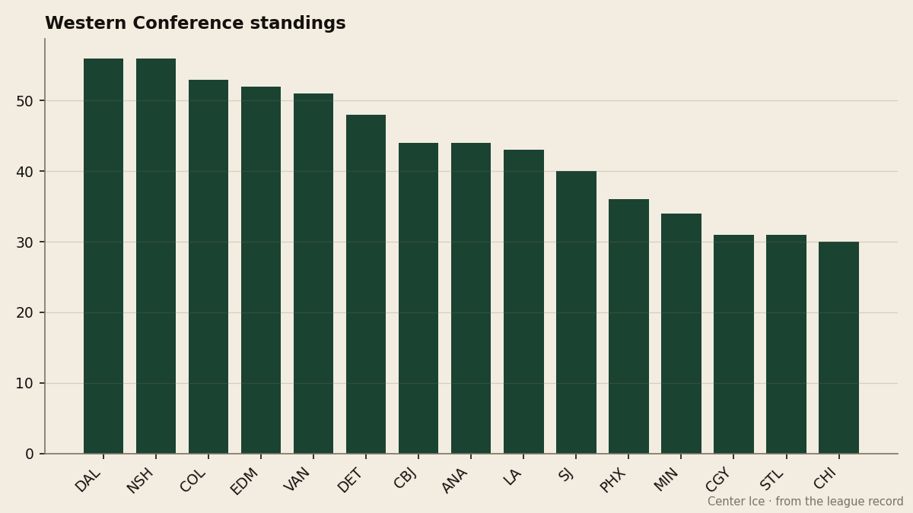

The Kings have won six straight, and the man carrying them is 32 and graded below his base
Los Angeles scored 27 goals in its 6-game win streak and sits 1 point from the 8th seed. Zigmund Palffy has done most of it, and nobody at The Gazette has written about it.
 Howard BlaineSenior writer, The Blaine Rankings · The Hockey Gazette
Howard BlaineSenior writer, The Blaine Rankings · The Hockey Gazette
 Los Angeles Kings has won six in a row. In those six games the Kings scored 27 goals and allowed 17, and they sit 1 point behind
Los Angeles Kings has won six in a row. In those six games the Kings scored 27 goals and allowed 17, and they sit 1 point behind  Columbus Blue Jackets and
Columbus Blue Jackets and  Mighty Ducks of Anaheim for the 8th seed in the Western Conference. They are tied with
Mighty Ducks of Anaheim for the 8th seed in the Western Conference. They are tied with  Tampa Bay Lightning for the longest active win streak in the league. And in the coverage this desk has logged since December, not a single sentence has been committed to Los Angeles.
Tampa Bay Lightning for the longest active win streak in the league. And in the coverage this desk has logged since December, not a single sentence has been committed to Los Angeles.
The omission is not hard to explain. The Kings are 13-16-5 on the season, a record that puts them nowhere near respectability by the standards of the teams above them. Their goal differential is -5 across 40 games, 144 scored and 149 allowed. The win streak has been real, but the season around it has been ugly, and ugly seasons do not attract column inches.

What has changed in those 6 games is  Zigmund Palffy87. He is 32, he was drafted 26th overall in 1991, and he is 43 goals and 77 points in 40 games. The pace column has him at 158 points per 82, which is 58 points more than he has ever produced in a single year. Last season he produced 100 points in 63 games for the same club, a clip that did not carry him into the top 15 scorers in the league. This season he sits 7th in the league in points and 4th in goals. He is on a career pace with a potential the Book puts at 61 and an overall grade of 81 that sits 8 points below his base of 89.
Zigmund Palffy87. He is 32, he was drafted 26th overall in 1991, and he is 43 goals and 77 points in 40 games. The pace column has him at 158 points per 82, which is 58 points more than he has ever produced in a single year. Last season he produced 100 points in 63 games for the same club, a clip that did not carry him into the top 15 scorers in the league. This season he sits 7th in the league in points and 4th in goals. He is on a career pace with a potential the Book puts at 61 and an overall grade of 81 that sits 8 points below his base of 89.
The Bureau's Development Index has him below his base, which means it judges the likelihood of further development as remote. He is 32 years old, earning $5.50M with 4 years left on his contract, playing 22.8 minutes a night for a team that has exactly one player in the league's top 30 scorers, and that player is him.
The room around him
 Roman Cechmanek91 has started 33 games and carries a 3.14 goals-against average with a .858 save percentage. He is graded at 85. He is the highest-graded player on the roster.
Roman Cechmanek91 has started 33 games and carries a 3.14 goals-against average with a .858 save percentage. He is graded at 85. He is the highest-graded player on the roster.  Adam Deadmarsh87 and
Adam Deadmarsh87 and  Jason Allison87 sit at 81.
Jason Allison87 sit at 81.  Mike Cammalleri83, the 22-year-old second-round pick, is at 77 with 24 points in 19 games and a form grade of 6 that has the Index at his highest reading of any young player on this roster outside the goaltending.
Mike Cammalleri83, the 22-year-old second-round pick, is at 77 with 24 points in 19 games and a form grade of 6 that has the Index at his highest reading of any young player on this roster outside the goaltending.
The Kings' payroll is $48.73M, which places them 13th of 30. At 43 points they cost $1.13M per point, the 9th-cheapest in the league. They turned a profit of $14.81M last season on revenue of $46.07M, a margin that says the business is healthy even when the product is not. Attendance is 13,605 a night, 17th in the league.
The schedule
The week ahead gives Los Angeles three games at home.  Edmonton Oilers comes on January 9,
Edmonton Oilers comes on January 9,  San Jose Sharks on January 11, and
San Jose Sharks on January 11, and  St. Louis Blues on January 13. The Oilers are on a 3-game win streak with 40 goals in their last 10 games. San Jose is on a 1-game loss streak and has allowed 41 goals in 10. St. Louis has lost 7 of its last 10 and carries a -49 goal differential, the worst in the league.
St. Louis Blues on January 13. The Oilers are on a 3-game win streak with 40 goals in their last 10 games. San Jose is on a 1-game loss streak and has allowed 41 goals in 10. St. Louis has lost 7 of its last 10 and carries a -49 goal differential, the worst in the league.
This is a reasonable three-game set for a team trying to close a 1-point gap. The road record matters, though. The Kings are 9-13 away from home. If they hold serve at home and lose on the road, they will be exactly where they are now when the schedule turns back against them in February.
The win streak has produced 27 goals in 6 games against 17 allowed. Over the full season the Kings have scored 144 and allowed 149 across 40 games. The streak flipped both sides of that equation at once, which is what separates a hot stretch from a hot goalie or a hot line.
Palffy told The Tunnel's Marcus Bell after a 1-4 loss to  Philadelphia Flyers on January 3 that his team could not create enough offense, that 18 shots was not a path to winning, and that he could not put the puck in the other net. That was the last game before the streak turned. Since then, the Kings have won every one. He is the best player on this team, and the gap between 43 points and 44 is the difference between watching April from home and playing in it.
Philadelphia Flyers on January 3 that his team could not create enough offense, that 18 shots was not a path to winning, and that he could not put the puck in the other net. That was the last game before the streak turned. Since then, the Kings have won every one. He is the best player on this team, and the gap between 43 points and 44 is the difference between watching April from home and playing in it.
The Gazette has not written about Los Angeles since December. This is the first correction.